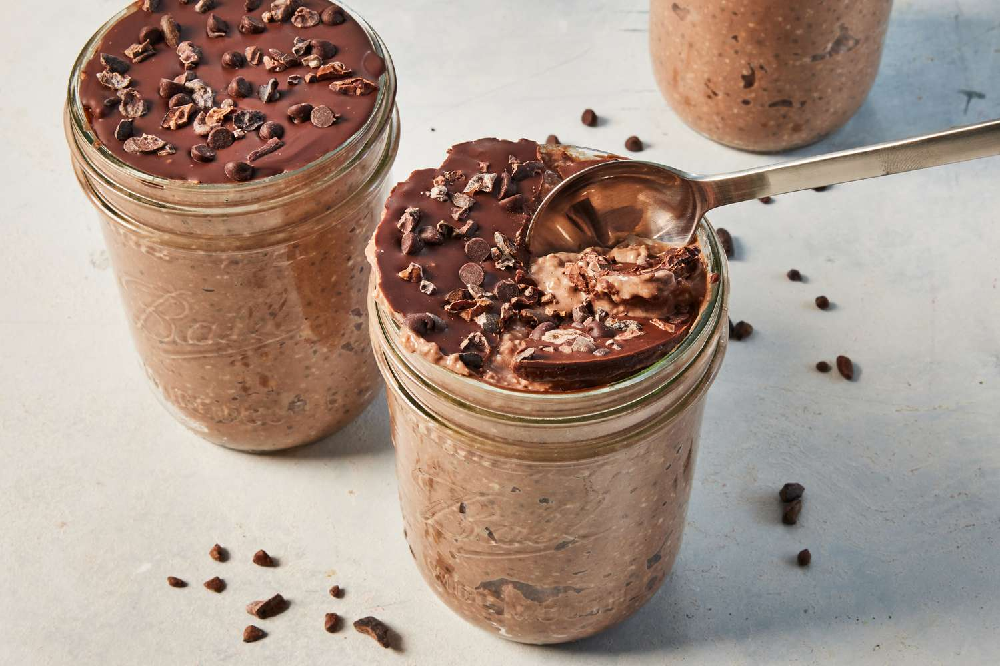

Overnights Oats

Ingredients
- Chocolate Whey Protein
- Kodiak Protein Oats
- Dark Cocoa Powder
- Chia Seeds
- Stevia Sugar
- Fairlife Protein Shake (26g version)
Steps to follow
- Add 1 serving of protein oats to a mason jar
- Add 1 scoop of chocolate whey protein powder to the mason jar
- Add 5 grams of chia seeds to the mason jar
- Add 8 grams of stevia to the mason jar
- Add 6 grams of cocoa powder to the mason jar
- Add Fairlife protein shake to the mason jar for thick consistency
- Let it sit in the fridge overnight
- Last but not least, Enjoy!
Macros